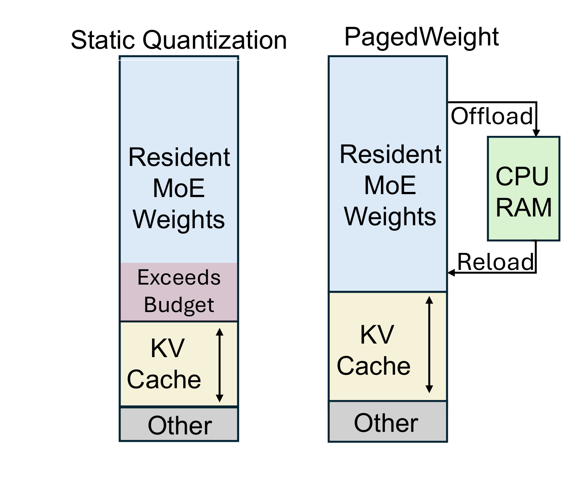
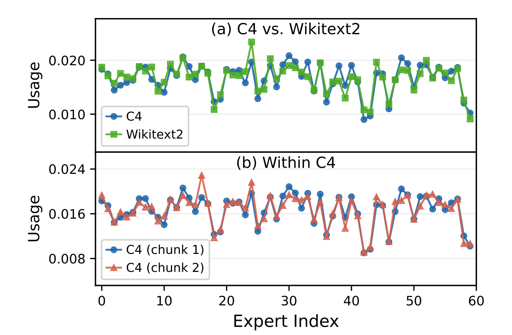
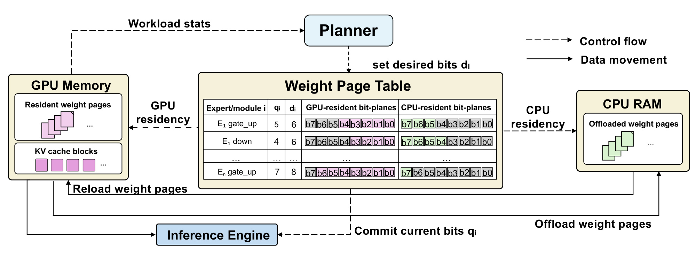
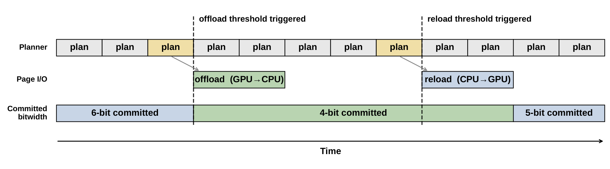
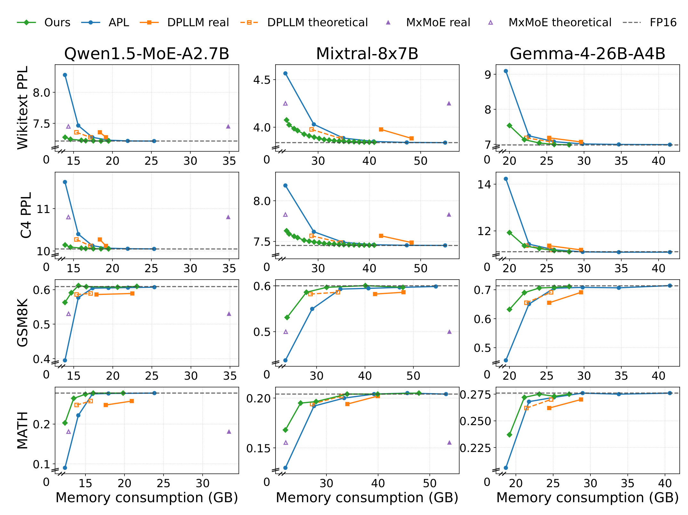
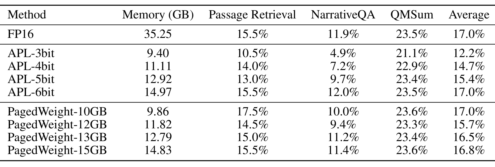
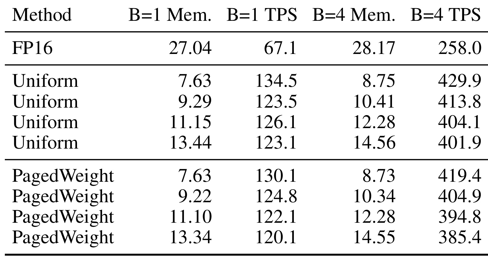
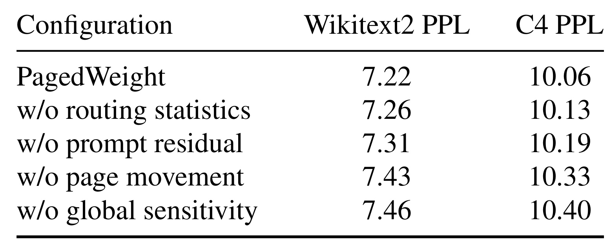

PagedWeight：面向 MoE 服务的动态质量感知权重量化
PagedWeight 的英文原题是 PagedWeight: Efficient MoE LLM Serving with Dynamic Quality-Aware Weight Quantization。作者为 Yuchen Yang、Yifan Zhao、Anisha Dasgupta 与 Sasa Misailovic，均来自伊利诺伊大学厄巴纳-香槟分校（UIUC）。论文于 2026 年 7 月 17 日提交，研究对象是长上下文、KV cache 密集的 MoE 大模型在线推理；唯一论文入口见 arXiv:2607.16184。截至本次核验，arXiv 页面与论文正文没有给出独立公开代码仓库；实验所用模型及若干对照方法本身是公开项目，但这不等于 PagedWeight 系统已经开源。
MoE 服务必须在同一块 GPU 上同时容纳体量很大的专家权重与随上下文长度持续增长的 KV cache；静态量化在请求开始前就固定了权重精度，无法在 KV cache 压力变化时继续释放或恢复权重空间。真正缺少的是一种能在不中断推理的前提下，按当前请求的质量风险动态重分配“权重—KV cache”显存的机制。
1. 背景和问题
1.1 不是再压一次模型，而是让显存分配随请求变化
MoE 通过路由器只激活少量专家，把单 token 的计算量与模型总参数量解耦；但未被当前 token 激活的专家权重仍通常常驻 GPU。论文指出，MoE 权重可占已加载模型显存的六成以上。另一方面，自回归生成要为每层保存历史 key/value，KV cache 随上下文长度、并发批量和生成长度增长。PagedAttention 能减少 KV block 的碎片，KV 量化或卸载也能压缩 cache，但这些技术没有触碰另一块巨大的常驻对象——专家权重。只管理 KV cache，相当于只在一侧挤空间；当权重先占满大半显存时，可用于长上下文和连续批处理的余量仍然有限。
传统后训练量化会在服务前把权重固定为 3、4 或 8 bit。它确实降低了模型底座的显存，但运行时无法再回答两个问题：当前请求的 KV cache 还会增长多少，以及哪些专家线性块现在可以少保留一两个 bit 而不明显伤害输出。若一开始选择高位宽，长请求可能因 KV 空间不足而降低批量甚至无法继续；若一开始选择低位宽，短请求和低压力阶段又平白损失质量。DP-LLM 一类运行时精度方法说明位宽可以变化，但原有实现并不把变化后的权重状态真正变成可回收的 GPU 页面，因此“计算时选低精度”和“把高位状态从显存移走”并不是一回事。

Figure 1 左侧把静态量化画成一次性分区：Resident MoE Weights 固定占据上部，KV cache 增长到预算之外时出现 Exceeds Budget，系统没有可调整的权重空间。右侧的关键并不是把整组专家永久搬到 CPU，而是让 Resident MoE Weights 的有效精度可收缩，并将不再需要的高位 bit-plane 页面 offload 到 CPU RAM；压力下降后再 reload。这样新增空间直接归 KV cache 使用，同时 Other 区域和推理所需低位页面仍留在 GPU。图里的双向箭头也说明策略必须可逆：PagedWeight 不是做一次离线压缩，而是在请求生命周期内维护多个可提交精度状态。对服务系统而言，这把“量化位宽”从模型文件属性改造成了与 KV block 一样受运行时控制的内存资源。
1.2 MoE 的路由不均衡提供了选择性降精度空间
动态降精度只有在系统知道“先动谁”时才有意义。MoE 每层路由器为 token 选择 top-\(K\) 专家并给出路由权重；不同专家得到的累计流量高度不均。论文用 routing mass 衡量专家在观测 token 上得到的归一化路由权重：
符号解释：\(\ell\) 表示 MoE 层，\(e\) 是专家，\(t\) 是观测 token，\(k\) 是 top-\(K\) 选择中的位置，\(z_{\ell,t,k}\) 是被选中的专家编号，\(r_{\ell,t,k}\) 是对应路由权重，\(\mathbf{1}\{\cdot\}\) 是指示函数。分子只累加流向专家 \(e\) 的权重，分母是该层全部已观测路由权重，因此 \(m_{\ell,e}\) 既反映被选频率，也保留路由器对选择的强弱。它不是静态参数重要性，而是可随在线流量更新的使用强度。
只看路由热度仍然不够：一个冷专家可能包含极度怕量化的权重，一个热专家的某个线性块也可能非常稳健。PagedWeight 继承 Hessian 加权的离线敏感度，为线性块 \(i\) 在位宽 \(b\) 下计算：
符号解释：\(i\) 标识一个待量化线性块，\(j\) 遍历其权重元素，\(W_{i,j}\) 是原权重，\(W_{i,j}^{b}\) 是 \(b\) bit 量化后的权重，\(h_{i,j}\) 是 Hessian 派生的重要性系数，\(s_i^b\) 是该位宽的加权量化误差。系数较大的权重即使数值误差相同也会贡献更高损伤；较小的 \(s_i^b\) 表示该块更能承受当前位宽。论文把这个离线先验与在线 routing mass、当前 prompt 的 residual 结合，而不是把任一信号当成单独真值。

Figure 2 的上半部分比较 C4 与 Wikitext2，下半部分比较 C4 的两个分块。横轴是 60 个 routed experts，纵轴是归一化 routing weight。曲线不是水平线：约 40 号附近的专家明显偏冷，而 20 多号、30 多号和 50 号附近存在更热的峰值。更重要的是，两种数据集曲线大体同向，同一数据集不同分块几乎重合，说明不均衡并非完全随机噪声。它为热度分桶和位宽下限提供经验依据。不过图中仍有局部差异，且只展示一个模型；因此 PagedWeight 没把历史热度固化为静态表，而是在服务时持续更新路由统计，再用 prompt residual 纠正具体输入的偏离。
问题由此可以精确化：系统要在 KV cache 需要额外 \(D\) 字节时，从数千个“某层—某专家—某线性块—某次位宽下降”的候选动作中，选择总释放量足够、预测质量损伤最小的一组；同时真实页面搬移不能阻塞推理，也不能让 kernel 在页面尚未驻留时读取较高位宽。PagedWeight 的贡献正是把这三个约束——可回收表示、质量感知规划与安全异步执行——接成一个在线闭环。
2. 方法
2.1 Paged Weight Representation：把位平面变成可管理页面
PagedWeight 建立在 Any-Precision LLM（APL）的共享 bit-plane 表示上。同一个量化张量不必为每种位宽保存独立副本，而是把不同有效位宽对应到不同 bit-plane 子集，并用 LUT 保存该位宽所需的质心值。PagedWeight 把一个专家继续拆到线性块粒度：索引 \(i=(\ell,e,u)\)，其中 \(\ell\) 是层，\(e\) 是专家，\(u\in\{\text{gate\_up},\text{down}\}\) 区分两类专家线性块。规划单位不是整个模型、整层甚至整个专家，而是专家内部的 gate/up 与 down 权重块；这比按专家统一位宽更细，能够利用同一专家内部不同矩阵的敏感度差异。
每个 \(i\) 在 Weight Page Table 中占一行。行内至少维护支持位宽集合 \(B_i\)、当前推理真正读取的 committed bitwidth \(q_i\)、规划器想达到的 desired bitwidth \(d_i\)，以及每个 bit-plane 连同 LUT 的驻留状态：GPU-resident、CPU-resident 或 in-transfer。论文把一个 bit-plane 及其 LUT 状态合称为一张 weight page。表中还记录 \(i\) 在每个支持位宽 \(b\) 下的 GPU 内存 \(M_i^b\)。从 \(b\) 降到 \(b'\) 可释放的空间是：
符号解释：\(M_i^b\) 包含线性块 \(i\) 在 \(b\) bit 下所需的 AP bit-plane 与 LUT 显存，\(M_i^{b'}\) 是目标低位宽的显存，\(\Delta_i^{b\rightarrow b'}\) 是这次动作能够交还给 GPU 分配器的字节数。这个量使规划目标不再是抽象的“平均 bit 数”，而能与 KV block 的实际字节需求直接比较。若 LUT 开销或不同线性块形状不同，相同的一位下降也会释放不同空间，规划器必须按真实 \(\Delta\) 计价。

Figure 3 将控制流画成虚线、数据搬移画成实线。Workload stats 把 KV 压力和运行时观测送给 Planner；Planner 只先写 desired bits \(d_i\)，并不立即改变推理可见状态。Weight Page Table 中粉色 bit-plane 表示 GPU 驻留、绿色表示 CPU 驻留，\(q_i\) 与 \(d_i\) 可以暂时不相等，这个差值就是待执行计划。左侧 GPU Memory 同时包含 resident weight pages 与 KV cache blocks，右侧 CPU RAM 保存 offloaded weight pages；底部 Inference Engine 只消费已经安全提交的 current bits \(q_i\)。因此 planner、Page I/O 与 inference engine 是解耦的：规划可以频繁刷新，传输可以异步进行，只有满足驻留条件的状态才对 kernel 可见。\(d_i\) 是意图，\(q_i\) 是服务承诺，两者分离避免了控制器一改位宽就让正在执行的 kernel 看到不完整页面。
离线阶段需要先把模型转成支持多位宽的 AP 表示，计算每个线性块的敏感度表和各位宽显存表，并训练后文的 residual head；在线阶段不再重新量化原始 FP16 权重，而是选择已有 bit-plane 子集、更新页面状态和搬移页面。这一点决定了系统的适用边界：它依赖能按位平面增删且有对应 kernel 的量化格式，不能无条件套在任意黑盒 4-bit 权重文件上。
2.2 Quality-Aware Runtime Planner：从质量损伤到释放字节
规划器反复执行 Algorithm 1 的 PLANSTEP。输入 \(T_t\) 包含 page table 当前状态，\(O_t\) 包含 KV 压力、路由统计和 prompt 特征，\(\Omega_{\text{off}}\) 保存离线敏感度、residual heads 与位宽下限，\(Q_t\) 是尚未执行的计划队列。每轮先把 KV 压力换算成目标字节 \(D_t\)，再按多个 bitwidth-floor stage 构造合法动作、给动作打分、用贪心法选到足够字节，并刷新队列。只有压力真正越过阈值时，才从最新队列取一个计划 \(\Pi_t\) 执行。持续预规划的价值在于：I/O 触发前已经有一份基于最新观测的候选，而不是显存临界时才同步扫描全模型。第一层信号是离线 global damage。对线性块 \(i\) 从 \(b\) 降到 \(b'\)，论文用敏感度差的非负部分定义：
符号解释：\(s_i^b\) 与 \(s_i^{b'}\) 分别是高、低位宽的 Hessian 加权误差，\(g_i^{b\rightarrow b'}\) 是平均校准输入上的增量损伤先验。\(\max\) 把因校准噪声导致的负差截为零，避免规划器把某次降精度误当成“提高质量”并无限偏好。它只代表跨输入平均风险，不能判断当前 prompt 是否恰好激活该块的脆弱方向。
第二层信号是 routing bucket。系统按每层专家的在线 routing mass 排序并分桶，桶 \(\beta_{\ell,e}\) 绑定损伤乘子 \(\mu_{\beta_{\ell,e}}\) 与 bitwidth floor。热桶使用更大的损伤乘子和更高最低位宽，冷桶允许更深下降；同一专家的 gate_up 与 down 共享路由桶，但仍保留各自 global damage。这样，路由统计负责表达“这次流量里谁常被用”，Hessian 表负责表达“其具体矩阵被量化后有多脆弱”。第三层信号是 prompt residual。离线校准对每个候选动作测量逐序列损伤，并把它相对全局估计的对数残差作为训练目标。对每种线性块类型 \(u\) 与位宽转移 \(b\rightarrow b'\) 训练一个共享线性头：
符号解释：\(\phi_i\) 是当前序列对线性块 \(i\) 的三维路由输入特征，包括 routing-weighted mean input norm、routing-weighted RMS input norm 与 maximum input norm；\(w_u^{b\rightarrow b'}\) 和 \(a_u^{b\rightarrow b'}\) 是对应块类型、位宽转移的线性回归参数；\(\hat{\rho}\) 预测当前 prompt 相对全局平均损伤的对数偏移。共享 head 控制了运行时参数规模，但也假设同类线性块的残差可由同一线性关系近似。
预测值不会直接无界放大损伤，而是先裁剪，再乘置信度和强度后指数化：
符号解释：\(\eta_i^{b\rightarrow b'}\) 是 prompt 对损伤的乘法修正，\(c_u^{b\rightarrow b'}\) 是该 residual head 的置信度，\(\alpha\) 控制修正强度，\(\rho_{\min},\rho_{\max}\) 限制外推范围。指数化保证乘子为正；正 residual 提高风险，负 residual 降低风险。裁剪和置信度是必要护栏，因为一个错误的大负值若不受限，会把高风险降位宽动作排到最前面。
KV 压力需要和候选动作的释放字节使用同一尺度。设分配器希望至少保留 \(T_{\mathrm{blk}}\) 个空闲 KV block，当前只有 \(F_{\mathrm{blk}}\) 个，每个 block 大小为 \(B_{\mathrm{KV}}\)，目标释放量定义为：
符号解释：\(D\) 是当前需要从权重侧释放的总字节数，额外的 \(+1\) 给越过阈值后的分配留出一个 block；若空闲量充足，\(D=0\)，无需降精度。这个目标把 planner 与真实 KV allocator 连接起来，而不是按固定 HBM 使用率周期性压缩模型。批处理时，各请求信号按其 KV block 使用权重合并成 batch-level 表，使长请求对计划贡献更大。
最终候选动作的预测损伤为：
符号解释：\(\epsilon\) 是最小损伤地板，避免零分数造成不稳定排序；\(\mu_{\beta_i}\) 来自专家路由热度桶；\(g_i\) 是全局敏感度差；\(\eta_i\) 是当前 prompt 的修正。规划器按 \(\hat d/\Delta\)，即“每释放一字节的预测质量代价”升序选动作，直到累计释放量达到 \(D\)。位宽深度上限只在当前阶段无法凑够字节时逐级放宽；若所有合法动作仍不足，则返回约束内最大安全释放量。核心机制不是单纯寻找最低敏感度权重，而是把离线质量先验、实时专家使用、输入条件修正和真实释放字节统一成一个在线资源选择问题。
2.3 Asynchronous Page Movement and Kernel Optimization：安全提交与融合执行
规划正确不代表执行安全。offload 时，高位页面最初已经在 GPU，系统可以先让后续推理只承诺较低 \(q_i\)，再把不再会被读取的高位页面复制或退休到 CPU；reload 的顺序必须反过来，先把高位页面恢复到 GPU，确认状态为 resident，最后才把 \(q_i\) 提高。若 reload 先提交高位宽，kernel 可能访问仍在传输的页面；若 offload 在降低 committed bitwidth 前就释放页面，正在使用旧精度的 kernel 可能读到失效地址。PagedWeight 把变更放在安全边界，并以 in-transfer 状态阻止不合法提交。

Figure 4 上方是 Planner 持续生成的 plan，中间是 Page I/O，底部是推理可见的 committed bitwidth。offload threshold 到来前，规划器已经多次刷新候选；触发点处选用最新计划，committed state 从 6-bit 切到 4-bit，随后 GPU→CPU 传输可以和 4-bit 推理重叠。reload threshold 处，CPU→GPU 先执行，直到页面恢复后 committed state 才从 4-bit 升到 5-bit。黄色 plan 表示被触发采用的最新版本，其余 plan 是准备但未提交的候选。图中 I/O 时间条没有阻断 Planner 时间轴，说明规划和传输均尝试与服务并行；但“异步”并未取消状态机约束，位宽可见性仍由 committed 边界严格控制。
最后，PagedWeight 提供 fused mixed-precision MoE AP CUDA kernel。它按每个线性块的 \(q_i\) 直接读取 AP bit-plane 与 LUT，在一个 kernel 内完成路由、专家激活、down projection 和输出累加，避免为被选专家逐个启动不同精度算子。gate_up 与 down 可以采用不同位宽，kernel 必须在 token 路由结果确定后读取各自页面。这里不存在额外模型训练；离线工作是量化表示、敏感度校准与 residual head 拟合，在线工作是观测、规划、页面状态转换和混合精度执行。系统效率因此取决于两点：I/O 是否能被推理覆盖，以及融合 kernel 是否足以抵消细粒度位宽带来的分支和查表成本。
3. 实验结果
3.1 模型、任务、基线与口径
论文选择了三种路由形态差异明显的 base MoE。Qwen1.5-MoE-A2.7B 为 14.3B 参数、FP16 权重约 26.7GB，含 60 个 routed experts 与 4 个 shared experts，top-4 路由；Mixtral-8×7B-v0.1 为 46.7B 参数、约 92.9GB，8 个专家、top-2 路由；Gemma-4-26B-A4B 为 25.2B 参数、约 53.1GB，128 个 routed experts 加 1 个 shared expert，top-8 路由。Qwen 实验运行在 NVIDIA RTX 6000 Ada，另外两种模型运行在 NVIDIA GH200 Grace Hopper，服务后端为 vLLM v0.20.1。量化策略和运行时超参数在 C4 校准集上构建：先计算线性块敏感度，再训练 prompt residual，最后小规模搜索路由桶、桶乘子、深度上限和 residual 权重。
质量指标覆盖 Wikitext2/C4 perplexity、GSM8K/MATH-500 推理正确率，以及 LongBench 的 Passage Retrieval、NarrativeQA、QMSum；效率指标是 generation TPS，显存口径是进程 peak reserved GPU memory。质量—显存曲线使用 batch size 16，更接近批处理服务。基线包括 FP16、uniform APL、静态混合精度 MxMoE 与动态混合精度 DP-LLM。一个必须注意的公平性细节是：原 APL 没有 MoE 支持，论文使用自己实现的融合 MoE CUDA kernel 作为 uniform APL-style baseline；DP-LLM 与 MxMoE 同时报告理论存储与现有实现真实显存，后者因为保留高位张量、双路径反量化或 fake quantization，可能远高于理论值。因此 Figure 5 同时画出 real 与 theoretical，不能把虚线理论点当成可直接部署的进程显存。
3.2 质量—显存主结果

Figure 5 的三列对应 Qwen1.5、Mixtral 与 Gemma，四行依次是 Wikitext2 PPL、C4 PPL、GSM8K 与 MATH；绿色 Ours 是 PagedWeight，灰色虚线是 FP16 质量。PPL 越低越好，正确率越高越好。绿色曲线在紧显存区通常先于 APL 接近 FP16：论文给出的近 FP16 区域约为 Qwen 16GB、Mixtral 35GB、Gemma 22GB。随着预算增加，各方案趋向 FP16，优势自然收窄；真正有区分度的是左端紧预算区，例如 Qwen 的 GSM8K/MATH 曲线在低显存处，APL 蓝线下降更陡，而绿色点仍靠近上方质量平台。MxMoE 的理论点看似显存很低，但实心 real 点位于更高显存，正好揭示“位宽分配结果”和“现有运行时真实占用”的差距。
论文摘要将跨场景结果概括为：达到 FP16 等效精度时最高节省 72.0% GPU 显存、最高提升 1.94 倍吞吐；在相近显存预算下，相对量化基线最高提高 39.3% 质量，代价是最多 4.1% 吞吐损失。这些是不同设置上的最大值，不能组合成“同一个模型同时获得四项最好结果”。Figure 5 更可靠的总体结论是：优势在三个路由结构、四类任务上方向一致，且在内存越紧时越明显；它支持“按专家块动态选精度优于统一静态位宽”的判断，但还不能证明所有生产负载都能得到 72% 或 1.94 倍。
3.3 长上下文质量
长上下文实验使用 Qwen1.5-MoE-A2.7B 和三个 LongBench 任务，直接把权重显存降低后留下的空间与 KV-cache-intensive serving 联系起来。Table 2 让每行 APL 和对应 PagedWeight 使用近似显存。最紧的一组中，PagedWeight-10GB 实测 9.86GB，Passage Retrieval 17.5%、NarrativeQA 10.0%、QMSum 23.6%，平均 17.0%；FP16 使用 35.25GB，平均同样为 17.0%。APL-3bit 使用 9.40GB，但三项为 10.5%、4.9%、21.1%，平均只有 12.2%。13GB 附近，PagedWeight 平均 16.5%，APL-5bit 为 15.4%。

Table 2 的信息不能只压缩成一个平均分。紧预算时最大差距来自 Passage Retrieval（17.5% 对 10.5%）与 NarrativeQA（10.0% 对 4.9%），而 QMSum 相对稳定（23.6% 对 21.1%）；这说明动态专家精度对不同任务的收益并不均匀。PagedWeight-12GB 的平均分为 15.7%，PagedWeight-13GB 为 16.5%，总体符合预算增加后质量恢复的方向，但各子任务仍有非单调波动，例如 10GB 设置的 Passage Retrieval 高于 15GB 设置。因评测样本和路由差异，单任务点可能有噪声；较稳妥的证据是 PagedWeight 在相近内存下总体优于 uniform APL，并能在 9.86GB 的设置上恢复 FP16 的平均分，而不是宣称每个任务都随显存严格单调。
3.4 吞吐效率
Table 3 在 sequence length 2048 下比较 batch size 1 与 4。FP16 在 B=1 使用 27.04GB、67.1 TPS，在 B=4 使用 28.17GB、258.0 TPS。最小显存配置中，Uniform 为 7.63GB/134.5 TPS 与 8.75GB/429.9 TPS；PagedWeight 为 7.63GB/130.1 TPS 与 8.73GB/419.4 TPS。后续三个显存档位也逐行接近：例如 B=4 约 12.28GB 时，Uniform 404.1 TPS，PagedWeight 394.8 TPS。论文据此给出相对 uniform baseline 的最大吞吐下降：B=1 为 3.3%，B=4 为 4.1%。

Table 3 同时回答两个不同问题。相对 FP16，低位 AP kernel 因减小权重带宽，吞吐反而显著提高；这是摘要“最高 1.94 倍”来源所代表的方向。相对同显存的 Uniform，PagedWeight 略慢，因为它还要收集观测、执行规划并维护异步页面状态，所以 3.3%/4.1% 才是动态控制本身更接近的开销上界。四组行的显存都近似成对，比较没有把更低显存配置与更高显存基线混为一谈。这里的测试是单机、固定序列长度和有限 batch，没有报告多租户连续批处理下的尾延迟、CPU-GPU 总线拥塞或频繁阈值震荡。因而结果支持“在该硬件和负载下页面管理没有吞掉量化收益”，但对线上 P99 latency 的结论仍需补测。
3.5 消融：谁在贡献质量
消融在 Qwen1.5-MoE-A2.7B 上报告 Wikitext2/C4 PPL，越低越好。完整 PagedWeight 为 7.22/10.06；去掉 routing statistics 后变为 7.26/10.13，说明热专家保护有小而一致的作用；去掉 prompt residual 后为 7.31/10.19，输入条件修正在这个设置中贡献略大。去掉 page movement 后，系统退化为静态混合精度计划，PPL 升至 7.43/10.33；去掉 global sensitivity、回退到 uniform quantization 后最差，为 7.46/10.40。

Table 4 显示组件贡献具有层次。全局敏感度和动态页面机制提供主要增益：从完整系统到去 page movement 或去 global sensitivity 的退化明显大于只去在线信号。routing statistics 与 prompt residual 的改善较小，却在两个数据集上方向一致，说明它们是在一个强离线先验之上做细调，而非单独承担量化质量。需要谨慎的是，表中没有同时去掉多个组件的交互消融，也没有在 Mixtral、Gemma 或 LongBench 上重复这组分析；因此不能据此断言 residual 在所有模型上都比 routing 更重要。更有价值的结论是：只有静态混合精度不够，在线页面移动确实为 planner 根据请求重新配置精度提供了可测收益。
综合四个研究问题，证据链较完整：Figure 5 回答跨模型质量—显存前沿，Table 2 针对大 KV cache 的长上下文质量，Table 3 检查吞吐代价，Table 4 验证离线与在线组件。但论文没有提供代码、端到端线上流量、能耗、P95/P99 延迟、PCIe 与 NVLink 分别测试，也未展示 calibration distribution shift 下 residual 失准的曲线。这些缺口不会推翻已报告结果，却限制了从“原型系统有效”到“可直接替换生产 serving stack”的外推。
4. 总结
4.1 我的判断与工程迁移价值
PagedWeight 最值得保留的思想是：把模型权重精度也视作一种可分页、可回收、带质量成本的运行时状态。它没有把权重量化与 KV cache 管理并列成两套互不相干的优化，而是用 KV block 压力生成明确字节目标，再用每个候选动作的预测损伤/释放字节做选择。Weight Page Table 中 \(q_i\) 与 \(d_i\) 的分离、offload/reload 的相反提交顺序，以及融合 mixed-precision MoE kernel，使这个资源模型真正落到服务执行路径。对推荐与搜索系统，这一机制可迁移到高并发生成式推荐、长用户历史建模和多候选解释生成：当用户上下文或候选缓存增大时，系统可以按当前路由热度临时牺牲少量冷专家精度，而不是立刻缩短历史、降低 batch 或拒绝请求。
工程上应先复现“真实显存是否释放”，再讨论质量。很多量化方案只有理论存储变小，运行时仍保留高精度副本或 fake-quantized tensor；PagedWeight 的核心验收指标应包括 allocator 可见的 freed bytes、页面传输与计算重叠比例、阈值触发频率、计划陈旧率和 kernel 实际读取的 \(q_i\)。其次要把 residual 校准与业务流量监控接起来：专家路由分布、输入 norm 与离线 C4 偏离时，应降低 \(c_u\) 或回退到只使用 global sensitivity 与保守位宽地板，而不是继续相信过期线性头。
4.2 局限、风险与后续跟进
这项工作的主要局限至少有四点：
- 质量预测依赖校准分布。 Hessian 敏感度、路由桶和三维输入 norm residual 都来自有限校准；领域切换、工具调用代码、极长 prompt 或多语言流量可能改变专家热度与脆弱性。
- 量化格式与 kernel 耦合较深。 AP bit-plane、位宽 LUT、细粒度页面表和融合 CUDA kernel 是一套共同设计；换成其他 group-wise、稀疏或带异常值通道的格式，页面边界与计算核都要重做。
- 异步收益受硬件拓扑影响。 CPU-GPU 带宽、统一内存、NVLink/PCIe、并发 DMA 和 allocator 行为会决定 I/O 能否隐藏；频繁在阈值附近来回切换还可能形成抖动。
- 评测仍以离线任务和吞吐为主。 缺少多租户连续批处理、真实到达过程、首 token 延迟、P99、失败恢复和服务级目标下的端到端结果，也未报告页面传输能耗。
- 开源与复现状态不完整。 论文没有给出独立代码仓库，APL 的 MoE 融合基线又由作者自行实现；外部复现需要核对 kernel 公平性、内存测量和 residual 校准细节。
后续最值得跟进的工作有四项。第一，等待代码或补充材料，优先核验 Weight Page Table 状态机、safe boundary 定义和 planner 的实际时间复杂度，因为这些决定系统能否稳定进入 vLLM 调度循环。第二，在相同模型上加入 KV cache 量化、cache offload 与 PagedWeight 的联合实验，测量两侧共同压缩时最优内存分配是否仍能由贪心 \(\hat d/\Delta\) 找到。第三，用分布外流量做压力测试：把 C4 校准换成代码、推荐对话和多语言请求，观察 prompt residual 的校准误差、置信度退化与质量护栏。第四，补齐连续批处理的尾延迟和总线利用率，并设计阈值迟滞、I/O 限流与失败回滚；只有这些指标稳定，动态权重页才可能从研究原型成为可维护的线上资源控制器。
总体而言，PagedWeight 的证据支持一个克制但重要的结论：在论文覆盖的三种开放 MoE、四类质量任务与指定硬件上，按 KV 压力动态调整专家线性块精度，能比固定量化获得更好的质量—显存前沿，并将额外吞吐损失控制在较小范围。它尚未证明对所有模型、总线和线上负载都成立，但已经把“权重精度能否成为服务期内存调度变量”从概念推进到了有表示、规划器、执行状态机、kernel 与消融证据的完整系统问题。